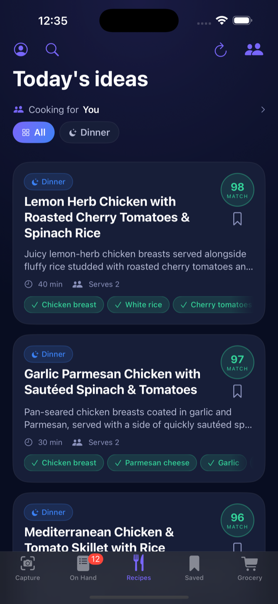
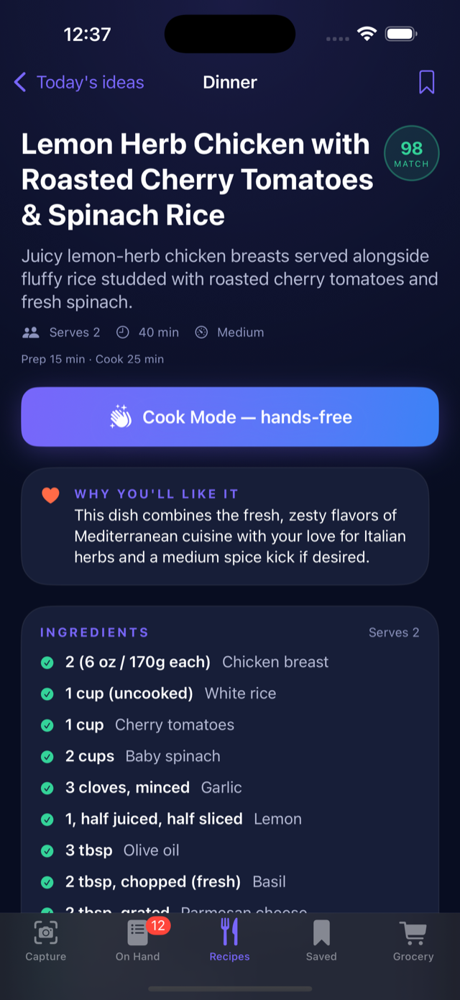
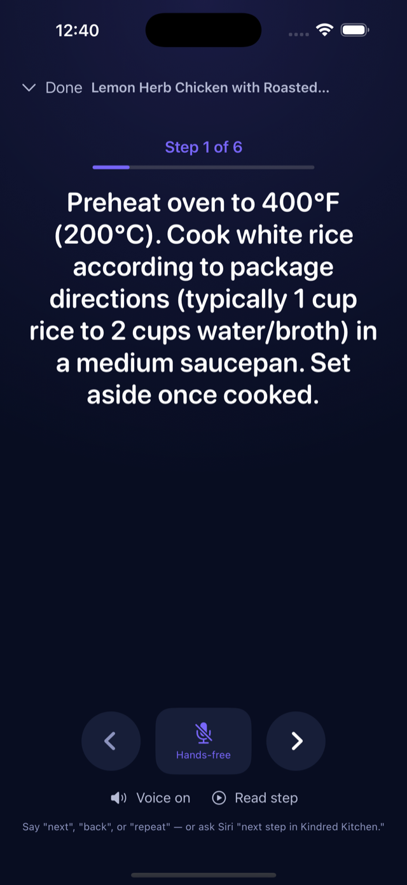

Cook what's in your kitchen.
Snap your fridge and get dinners you'll actually love tonight —
matched to your taste and built from what you already have.



Photograph your fridge or pantry and KindredTable identifies your ingredients — labels and all.
Recipes ranked by your palate, cuisines, spice level, time, and skill — not a generic list.
Exact amounts, servings, prep and cook times, chef tips, and steps written for your equipment.
One big step at a time, read aloud, screen stays awake. Say “next,” “back,” or “repeat” — or ask Siri.
Type any dish and get a full recipe tuned to your taste, with a shopping list for what you're missing.
Share your taste by QR — no accounts — and blend the whole table so a meal works for everyone.
Set a diet or allergens and every recipe strictly honors them — nothing you can't or won't eat.
Add missing items to a grocery list in one tap, and keep the recipes you love in one place.